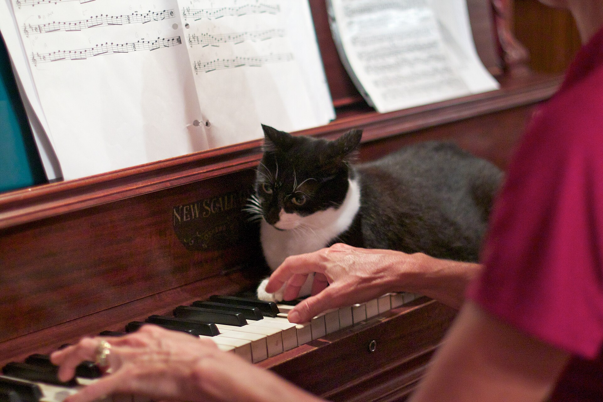
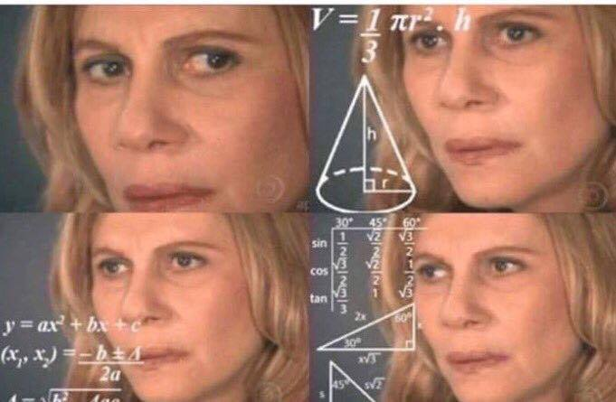

Let's practice scales.
Musicians need to learn every scale and chord so they can grab them quickly when improvising.

Photo: cogdogblog, CC BY 2.0, Wikimedia Commons

Renata Sorrah as Nazaré Tedesco, Senhora do Destino (TV Globo)
Phones out. Open your piano app.
Today
- Five keys, all together: major scale, then Mixolydian.
- Three chords in each key: major 7, minor 7, dominant 7.
- Four blues jams, a real band each time. C, F, G, D.
- Book in hand? Show me.
The midterm hands you one of these keys at random. Today is the first rep.
What can you do now?
Name one thing you can play today that you could not play at 2:00.
Next week: quiz 1 on the form, and the jams start for real. You call the key.
My notes for this sliden hides this box